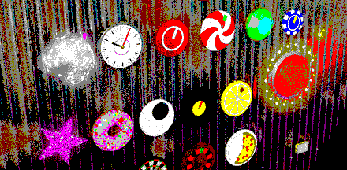
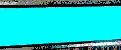

MAC + WINDOWSAUVST3LV2stereo or monono licenceno sign-up
what is it
Tin Roof is a pad reverb and a plain old digital reverb, in one small window. It's a plate: bright, a bit metal, a bit cheesy, in the nicest way. It's cheap on your computer, so you can put it on everything, and it works on drums, vocals, synths, guitars, whatever you've got.
And then there's the red button. HOLD freezes the tail into a pad that rings for as long as you like. Keep playing and it stacks. Tie it to the song and it becomes a stutter that you can't edit: one frozen chord, chopped in time. Cheap, strict, and nothing else sounds like it.
eleven bits of junk
Every knob is a different thing off a roof (three more are down in hold in time). Drag up and down on any of them. Double-click to put it back.
the red button
HOLD
- The reverb's tail freezes and rings on. Nothing leaks out of it, nothing builds up.
- Your dry sound still plays on top, so you can play over the pad.
- LAYER (the poker chip) lets new notes into the frozen pad. Each chord stacks on the last; the old ones slowly fade.
- SHIMMER keeps whatever it had when you pressed. DRIFT makes it breathe.
- Press and release don't click: it fades in and out in 40 ms.
T 1.00 S MIX 25 %
hold in time
Turn the switch on and HOLD opens and closes with the song, freezing the tail instead of muting it. You get a rhythmic stutter that is only ever the chord you froze. There are four things to set, and that's all it lets you do. That's the point.
SYNC OFF
The gate runs only while the song plays, and the HOLD button still works over it. Turn LAYER up to let each hold pick up new playing, or leave it at nothing to stutter one frozen chord.
twelve presets

the small print
- Free. No licence, no trial, no menu bar, no settings. Only the window size (1×, 2×, 3×) and the presets.
- Mac: AU, VST3 and LV2, stereo or mono, any sample rate. macOS 10.11 or newer on Intel, 11 or newer on Apple Silicon.
- Windows: Windows 10 or 11, 64-bit, VST3 and LV2 (an audio effect). Windows may say it protected your PC: click More info, then Run anyway.
- Cheap on the computer: two minutes of stereo audio in a couple of seconds, on one core.
- Safe for your ears: the feedback can never go above 1, the output goes through a limiter at −0.2 dBFS, and every knob is tested while the tail rings.
- A held pad survives a bounce in Logic.
- The first time, macOS says it can't open the installer. That's expected: see Help.